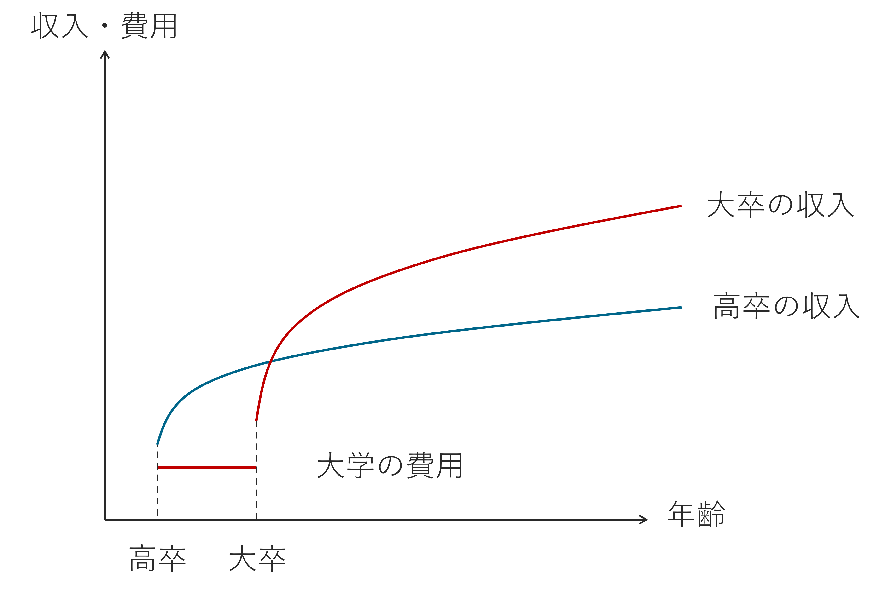
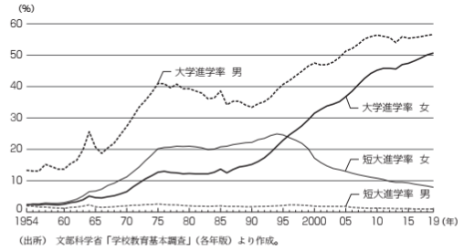
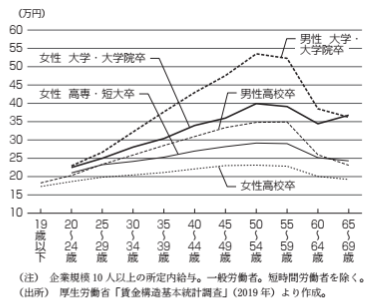
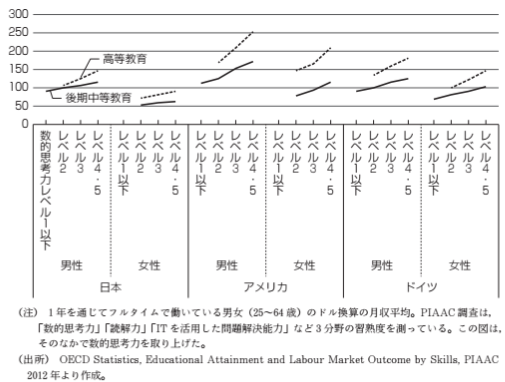
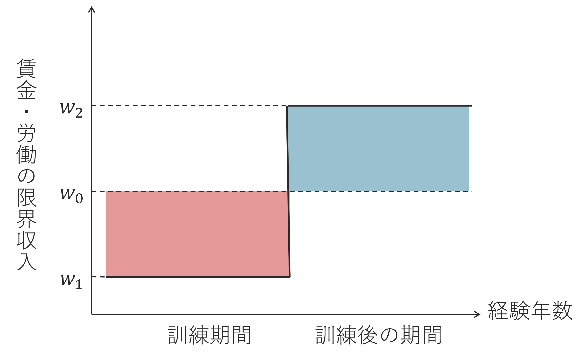
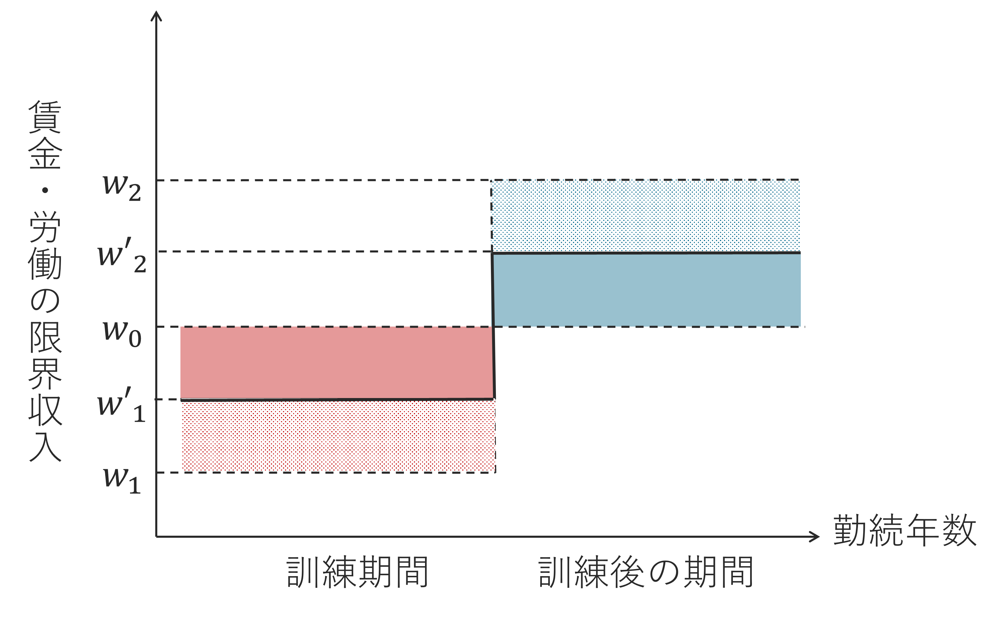

人的資本モデル
本資料は、大森義明・永瀬伸子（2021）『労働経済学をつかむ』有斐閣 を参考に作成しています。 授業目的に合わせて一部構成や表現を調整しています。
教育・訓練と人的資本
人的資本モデルとシグナリングモデル
高卒と大卒の収入の差
高校卒業後に就職するか、それとも大学に進学するか—みなさんも一度は進路について考えたことがあると思います。その際に、「高卒」と「大卒」とで、将来的にどれくらい収入が変わるのかについて考えた人もいるのではないでしょうか。
日本における平均初任給、生涯賃金は以下の表のとおりです。
| 高卒初任給 | 大卒初任給 | 高卒と大卒の差 |
| 167,400円 | 210,200円 | 43,000円 |
| 1高卒生涯賃金 | 大卒・大学院卒生涯賃金 | 高卒と大卒の差 |
| 2億1千万円 | 2億7千万円 | 6千万円 |
2023年度の私立大学の平均的な4年間の学費は、文系学部で約410万円、理系学部で約540万円2です（文部科学省「令和5年度私立大学入学者に係る初年度学生納付金等平均額」）。
大学進学をしたら400～500万円の学費がかかるが、生涯賃金は6千万増える。平均的な学生にとっては、大学進学は良い投資3だと言えるでしょう。

人的資本モデル
このように、人が持つ知識や能力などを投資の対象となる資本とらえる考え方を人的資本モデルと言います。
その他の条件が一定のもとで、大卒の期待収益から大学進学の費用を差し引いた純収益が、高卒のそれを上回る人は大学に進学します。
現状、日本の高卒者の半数は大学進学していますが、大学に進学しない人がいるのはなぜでしょうか？
誰でも学費を工面できるとき
① 受験や大学卒業には心理的費用（努力や忍耐）を必要とするため
学習能力の高い人（努力のコストが低い人）が大学進学をする傾向があります。
② 人は将来よりも現在を重視する（将来の価値を割り引く、現在価値に換算する）傾向があるため
先ほどのグラフでは、現在の大学進学の費用と将来の収入を同じ金額として扱っていましたが、実際の意思決定では将来の収入は割り引かれて評価されます。未来志向の人ほど大学進学をする傾向があります。
③ 平均的な生涯賃金よりも低い生涯賃金しか期待できない人がいるため
中にはパートやアルバイトで働いたり、無職になったりする人もいます。先ほどの生涯賃金は平均的な賃金と退職金が支払われることを想定しているため、それよりも低い生涯賃金しか期待できない人もいます。また、雇用機会により期待できる生涯賃金が異なるため、日本では雇用で差別されがちな女性より、男性の方が大学進学をする傾向があります。
ただし、ほとんどのOECD加盟国では1990年代前半に男女の進学率が逆転し、女性の方が男性よりも大学進学率が高くなっています。
学費を工面できないとき
④ 学費を工面できないため
大学進学には学費がかかり、これが工面できない人もいます。経済学では、これを借り入れ制約とよびます。このため、裕福な家庭の人ほど大学進学をする傾向があります。奨学金などの学生への貸付制度には、この制約を緩和する働きがあります。
シグナリングモデル
大学進学の意思決定については、人的資本投資の考え方とは異なるシグナリングという考え方もあります。
人的資本モデルとシグナリングモデルでは、（大学）教育の役割が異なります。
人的資本モデルにおける（大学）教育：教育を行うことによって人的資本（個人のスキルや能力）が高まる
\(\rightarrow\) 人的資本を養う機能
シグナリングモデルにおける（大学）教育：教育は能力を引き上げる役割ではなく、教育を受けられるほどその人の能力が高いことを示す
\(\rightarrow\) 選別機能
人的資本モデルとシグナリングモデル、どちらのモデルが正しいかをデータから識別することは難しいです。どちらのモデルも、能力が高い人が大学進学をする傾向があり、大卒者の方が高卒者よりも平均賃金が高くなることを示唆しているからです。ただし、偶然に教育年数が長くなると賃金が上がるという研究結果もありますので、大学教育には多少なりとも人的資本を蓄積する役割があると言えるでしょう。
モデルの応用：教育における男女の差異
人的資本モデルは、教育における男女の差異を理解するのに役立ちます。
日本の大学進学率の推移

- 1954年当時、高等学校進学者は男女ともにほぼ半数
- 1960年代の高度成長期：家庭所得の高まりとホワイトカラー職の拡大 \(\rightarrow\) 進学率上昇
- 1975年には男女とも9割以上が高校進学
- 同時期に男性大学進学率も1割 \(\rightarrow\) 4割に上昇
- 女性は大学進学率ではなく短大進学率が先に上昇
- 1986年：男女雇用機会均等法
- 1994年：女性短大進学率がピーク、以降大学進学率が逆転
- 2019年：大学進学率は男性56.6％、女性50.7％
欧米諸国では、近年は女性の大学進学率が男性を上回るようになりました。日本においても、女性の雇用推進に伴い、女性の大学進学率が上昇してきたことが見て取れます。
かつては新卒採用を男女別に実施する企業が多く、女性は未婚期のみに補助的な業務に従事することが暗黙の前提になっていました。女性の結婚退職・出産退職を奨励するような退職金の割増制度をもつ企業も少なくなく、実際、1985年当時の大企業の勤続年数は男性12.2年、女性4.4年（賃金構造基本統計調査）だったそうです。
こうした状況では、女性が大学進学をしても将来的に得られる収入の増加が期待しにくく、進学を選ばない傾向が強かったのも理解できます。
しかし、日本でも1990年代後半以降、女性の4年制大学向が強まっています。
- 新卒採用やキャリアの男女格差の縮小
- 専業主婦という未来像の現実性が縮小（ライフパターンの変化）
- 1997，2006，2016年の男女雇用機会均等法の改正による強化
- 育児・介護休業制度の強化
このような環境の変化により、女性の人的資本投資行動が男性と類似してきた側面があるとみられています。
また、大学進学率の推移はシグナリングとしてとらえることもできます。
女性は、4年制大学に進学し、4年間の学校教育投資を行うことで、長期的に就業する意思を企業側に示せるからです。実際に、1980年当時、女性は文学部や家政学部など、将来主婦として家庭内で過ごすことを想定した選択が多かったのですが、これが徐々に変化しています。
ただ、依然として専攻する学部には大きな男女差が存在します。
| 学部 | 女性比率 |
|---|---|
| 文学部 | 65% |
| 法・政治学部 | 33% |
| 商・経済学部 | 30% |
| 理学部 | 28% |
| 工学部 | 15% |
文系学部では比較的女性比率が高く、理系学部では女性比率は低くなる傾向があります。
STEM（Science, Technology, Engineering and Mathematics: 科学・技術・工学・数学）分野は、大きく発展しており、女性の参入も期待されている分野ではありますが、日本ではまだまだ男子学生が多数を占め、親や学校による進路指導におけるジェンダー・バイアスが疑われます。
男性だけではなく、女性が技術開発に関わることでイノベーションが促進されるという研究結果もあるので、日本においてもSTEM分野への女性の進出が期待されます。
大学進学によって見込まれる収入は男女でどのように差があるのでしょうか？

- 大学・大学院卒の男女差：20～24歳時の差はほとんどない。男性は年齢とともに所定内給与が上昇するが、女性の上昇幅はそれよりも小さいく男性高校卒より若干高い程度
- 高卒の男女差：男性は年齢とともに所定内給与が上昇するが、女性はあまり上昇しない
学歴や仕事経験によって賃金が異なる現象は、さまざまな国で見られます。

- どの国でも学歴による月収の格差がある
- 実は、日本は「数学的思考力」「国語力」ともにOECDの中でも平均より高く分散も小さいが、学歴による賃金の差は小さい
- 学歴による賃金の差はアメリカ \(>\) ドイツ \(>\) 日本の順に大きい
- 日本では、大卒でありながら高卒程度の学歴でこなせる仕事に就くものの割合が高いという指摘（国立教育政策研究所）
- 日本では、大卒が若年期に下積みをする傾向がある、仕事への応募に学歴要件が明確なポストが少ないという指摘（三谷, 20204）
- 日本において、高等教育を受けた女性の月収は高卒程度の男性のよりも低い
確認クイズ：
次の文章に適切な語句を入れなさい。
人的資本とは、知識、能力、技能など、労働者による労働サービスの（企業にとっての）価値を生む総体のことを指す。大学進学は一種の であり、先に （受験勉強や学費）を負担し、卒業後に不確実な （生涯賃金）を得る。その他の条件を一定をすれば、2つの差である が高卒のそれを上回る人は大学に進学する
語句
収益 費用 消費 投資 純収益
企業内訓練
人的資本への投資は、学校教育によってのみ行われるものではなく、働き始めたあとも仕事の中での訓練や研修、仕事の経験の積み重ねといった形で続いていきます。
生産性は、教育だけではなく、訓練（training）、従事している仕事の中での熟練（learning-by-doing）によって上昇し、生産性の上昇とともに賃金も上昇します。
学校教育と仕事の中での訓練にはどのような違いがあるでしょうか。
学校教育
- 学費を支払うので費用を意識しやすい
- 将来の賃金や就職のしやすさといった便益を得られる
- 幅広い企業で生かせる能力を身に着けているととらえられる
仕事の中での訓練
- 費用は発生しているが労働者は支払わず、逆に給料をもらいながら訓練を受ける
- その企業での生産性が上昇し、それに伴い賃金も上昇するという便益を得られる
- その企業の中でしか生かせない能力を身に着けることもある
この2つの人的資本には、収益の性質に差があります。一般的人的資本はその便益を労働者が受け取り、企業特殊的人的資本は労働者と企業の両者に便益をもたらす。この違いはなぜ生まれるのか、以下で詳しく見ていきましょう。
一般的訓練
この例において、資格を取得するための研修がもたらす便益には、以下のようなものが考えられます。
- 資格をほかの銀行でも活かすことができ、転職時の賃金でも評価される
- 社会人としての基礎的なマナーを身に着けることでほかの会社でも評価される
- 労働者の限界生産物の増加によって、労働の限界収入を増加させる
このように、どの企業でも通用する能力を身に着けるための訓練は一般的訓練です。
理論的には、一般的訓練の便益は労働者が100%引き受けることになり、企業は生産性の向上を労働者の賃金に100%反映させることになります。
なぜなら、こうしないと労働者が他企業に引き抜かれてしまうからです。一般的訓練は汎用性があるので、労働者の生産性は他企業でも同じだけ向上しています。
ユウコの銀行では見習い期間を終えるだけでなく、資格をとるとさらに給料が高くなるそうです。資格を取得する過程で生産性が向上しているので、給与が上がらなければ、ほかの銀行に引き抜かれてしまうでしょう。
一方、訓練の費用は労働の限界収入の減少分と訓練の直接（金銭的）費用の和です。
- 訓練に費やす時間の分、労働時間が減少し、（訓練をしていないときと比べて）労働の限界生産性が減少することで、結果労働の限界収益が減少する
- 研修費用など直接的な金銭費用が発生する場合もある

- 訓練前の労働の限界収入は \(w_0\)
- 訓練期間中は労働時間が減少するため、労働の限界収入が \(w_1\) に減少
- 見習い期間中の賃金は低い
- 訓練期間後は生産性が向上し、労働の限界収入が \(w_2\) に増加
- それに伴い賃金も上昇
- 訓練の総費用は赤い長方形の面積分、労働者が受け取る訓練の収益は青い長方形の面積分
訓練の収益は100％労働者が受け取るため、訓練の費用は100%労働者が負担します。企業が負担してしまうと、引き抜かれたときに訓練の費用分だけ損してしまうからです。
一般的訓練は、経験年数とともに賃金が上昇することを示唆します。
- 訓練期間中の賃金は \(w_1\) \(\rightarrow\) 訓練を受けない場合の賃金 \(w_0\) よりも低い
- 訓練期間中の賃金は \(w_2\) \(\rightarrow\) 訓練を受けない場合の賃金 \(w_0\) よりも高い
\(\rightarrow\) 一般的訓練が雇用期間中に頻繁に行われていくとすれば、賃金は経験年数とともに上昇する
ここで言う経験年数とは、労働市場で働いた年数のことを指します。
重要なのは、一般的訓練による賃金の上昇は、労働者が他企業に転職しても起こるということです。 労働者の訓練後の高い生産性に見合う賃金が支払われなければ、労働者は転職する可能性があるのです。
企業特殊訓練モデル
ユウコが、資格を取得するための研修ではなく、自社のサービス固有の知識や技術（例えば、特定のシステムや機械の操作方法、社内の業務フローや規定など）を習得するための研修（企業特殊的訓練）を受けていたらどうなるでしょうか。
このときの研修がもたらす便益は、以下のような性質を持ちます。
- 労働者の生産性の向上は、労働者と企業の雇用関係が続く限り両者に便益をもたらす
- 労働者が離職する、あるいは企業が解雇することで雇用関係が終われば、労働者も企業も便益を受け取ることができない
理論的には、企業特殊的訓練の費用と便益は、企業と労働者とでシェアする（企業と労働者の共同投資の形をとる）ことになります。
このことは、企業と労働者、それぞれが費用や便益を100%引き受けるケースを考えると分かります。
| 費用と便益の引受 | 詳細な説明 |
|---|---|
| 労働者 | スキルが企業内でしか使えないため、将来の収益が見えず、訓練に投資しようとしない。 |
| 企業 | 労働者が辞めると訓練による生産性向上の便益を企業が回収できず、訓練に投資したがらない。 |
このように、労働者と企業のいずれにも企業特殊的訓練の費用を単独で負担するインセンティブがなく、費用をシェアするのであれば、便益もシェアをする必要が生じるのです。
企業特殊的訓練の費用と便益をシェアすることで、雇用関係を維持するインセンティブも生まれます。企業が解雇するにしても、労働者が自ら離職するにしても、双方は雇用関係を維持していれば受け取れた企業特殊的訓練の便益を失うことになるからです。
企業特殊訓練の場合、勤続年数と賃金の関係は下図のように表すことができます。

- 訓練前の労働の限界収入は \(w_0\)
- 訓練期間中は労働時間が減少するため、労働の限界収入が \(w_1\) に減少
- 訓練の費用を企業とシェアするため、賃金は \(w'_1\)
- 訓練期間後は生産性が向上し、労働の限界収入が \(w_2\) に増加
- 訓練の便益も企業とシェアするため、賃金は \(w'_2\)
- 労働者が負担する訓練費用は赤い長方形の面積分、企業が負担する訓練費用は赤い網掛けの面積分
- 労働者が受け取る訓練の便益は青い長方形の面積分、企業が受け取る訓練の便益は青い網掛けの面積分
企業特殊訓練は、勤続年数とともに賃金が上昇することを示唆します。
- 訓練期間中の賃金は \(w'_1\) \(\rightarrow\) 訓練を受けない場合の賃金 \(w_0\) よりも低い
- 訓練期間中の賃金は \(w'_2\) \(\rightarrow\) 訓練を受けない場合の賃金 \(w_0\) よりも高い
\(\rightarrow\) 企業特殊訓練が雇用期間中に頻繁に行われていくとすれば、賃金は勤続年数とともに上昇する
ここで言う勤続年数とは、特定の企業で働いた年数を指します。1つの企業で2年働いた場合は勤続年数2年ですが、2つの企業で1年ずつ働いた場合には、今の企業での勤続年数は1年になります。
重要なのは、企業特殊訓練による賃金成長は、労働者がその企業で働き続ける間だけ続き、転職したら終わるという点です。
企業特殊訓練の成果は他の企業で生かすことはできないため、訓練を終えた労働者が他の企業に転職した際は、 \(w_0\) の賃金しか期待できなくなるのです。労働者は訓練費用の一部を負担したにもかかわらず便益を受け取れないことになりますので、他の理由がない限り労働者に転職をするインセンティブは生まれません。
大卒の賃金が高卒よりも年齢による上昇が大きい理由
一般的訓練と企業特殊訓練を区別することで、において、大卒層の方が高卒層よりも年齢階級による平均賃金の上がり方が急になっている理由を一定程度推察できます。
恐らく、大卒者に対して高卒者よりも多くの企業内訓練が提供されているからです。つまり、大卒者に対してより多くの人的資本投資が行われていると考えられます。なぜそのような区別を行うかというと、恐らく過去の経験から、大卒者の方が投資効果があるからでしょう。
そうして労働生産性が上がった労働者を、企業は長く働かせたくなります。投資を受けた賃金の高い大卒者がより長時間働くことで、労働所得は増加し、大卒者と高卒者の格差はさらに拡大すると考えられます。
一方、同じ大卒者同士でも、男女で年齢階級による平均賃金の上昇率が異なるのはなぜでしょうか？
図からだけでは分かりませんが、恐らく以下のような点が理由になっていると考えられます。
- 女性は出産等の理由で育児休業の取得や時短勤務、一時的な離職や再就職を行うことで、就業年数が短くなる傾向があり、企業内訓練の総量が少なくなる
- 「女性の方が男性よりも離職する可能性が高い」と企業が考えれば、企業が費用を負担する企業内訓練は、女性に対して少なくしか実施されない（企業特殊的訓練の実施における男女差別）
このような差別に対抗するには、自分自身の経済負担で一般的人的資本投資を行うことや、よりマッチする企業を探すことが必要になります。
確認クイズ：
次の文章に、適切な語句を入れなさい。
訓練には一般的訓練と があり、前者は賃金が とともに上がることを、後者は賃金が とともに上がることを示唆する。一般的訓練では、訓練の便益の100％を労働者が享受することになるため、費用も100％ の負担となる。企業特殊的訓練では、便益と費用が企業と労働者との間でシェアされ、両者に するインセンティブが生まれる。